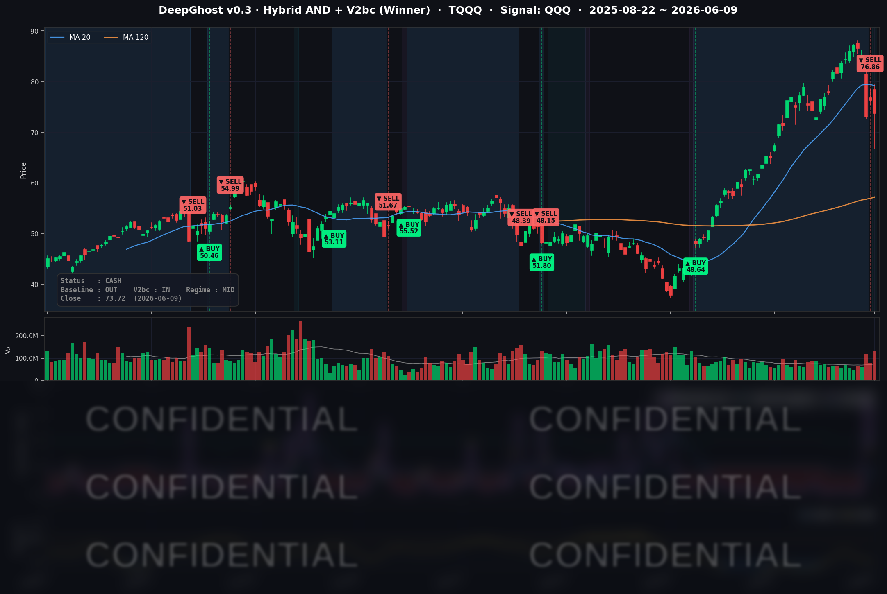

애플·반도체 개별 악재로 빅테크가 빠지고 자금이 소형·가치주로 옮겨간 하루였습니다.
CPI 발표 후 금리 및 주가 방향이 정해질 것으로 보입니다.
시장은 기술주에 대한 차익 실현 욕구가 강해 보입니다.
조그마한 악재에 크게 반응하는 시장이니 한발 떨어져서 다음 시그널을 기다리세요.
📊 오늘의 매매 신호
| 항목 | 내용 |
|---|---|
| 오늘 할 일 | ✅ 아무것도 안 해도 됩니다 |
| 포지션 상태 | 💵 현금 보유 중 (OUT OF POSITION) |
| 현금 보유 기간 | 2026-06-08 ~ (2일째) |
| TQQQ 종가 | $73.72 (-3.34%) |
전날(6/8) 미국 장 시가에 TQQQ를 전량 정리하고 현금보유 상태가 그대로 이어집니다. 따로 매매할 것 없이 관망하시면 됩니다. 너무 주식에 몰입하지 마시고 현실에 집중하세요. Ghost.AI와 같은 지속 가능하고 독자적인 투자 방법이 있어도 투자 시드가 없으면 부자가 되지 못합니다. 매매는 Ghost.AI가 알려드립니다. 우리는 열심히 시드를 모으시면 됩니다.
TQQQ 시그널 — OUT OF POSITION
현재 상태: 현금 보유 중 | 신규 매수 신호 없음

오늘 나스닥과 QQQ가 빠지면서 TQQQ는 하루에 -3.34% 밀렸습니다. 가격만 보면 "이쯤이면 슬슬 들어갈 때 아닌가" 싶을 수 있지만, AI의 판단은 달랐습니다.
모델 내부적으로는 급락일에 단기 반등 가능성을 가리키는 쪽으로 신호가 살아났습니다. 다만 이것은 "낙폭이 컸으니 잠깐 튈 수 있다"는 신호일 뿐, 추세가 바닥을 확인했다는 신호는 아닙니다. 추세를 보는 평균선은 여전히 약세 구간에 머물러 있어, 모델은 진입 조건을 충족하지 못했다고 봤습니다.
핵심은 이것입니다. 떨어졌다고 무조건 사지 않습니다. 단기 반등 가능성이 보여도, 추세가 바닥을 확실히 다질 때까지 기다리는 것이 전략의 규율입니다. 특히 다음 주(6/16~17) 신임 의장이 주재하는 첫 FOMC를 앞두고 변동성(VIX)이 한 단계 올라온 상황이라, 이벤트 전에 포지션을 다시 잡는 것은 더더욱 신중해야 할 구간입니다. 기다리면 기회는 옵니다.
오늘 미국 시장 — 시황 요약
지수 마감
| 지수 | 종가 | 등락률 |
|---|---|---|
| S&P 500 | 7,386.65 | -0.26% |
| 나스닥 종합 | 25,678.82 | -0.97% |
| 다우 존스 | 50,872.11 | +0.17% |
| 러셀 2000 | 2,867.02 | +0.41% |
전형적인 "자금 이동(로테이션)" 장세였습니다. 빅테크·반도체가 몰려 있는 나스닥은 빠진 반면, 다우와 중소형주(러셀 2000)는 올랐습니다. 메가캡 기술주에서 빠져나온 자금이 가치주·소형주로 옮겨가면서 지수끼리 방향이 엇갈렸습니다.
국채 금리 동향
| 만기 | 수익률 | 전일 대비 |
|---|---|---|
| 3개월 | 3.635% | +0.7bp |
| 10년 | 4.528% | -2.4bp |
| 30년 | 5.011% | -1.3bp |
장기물 금리가 소폭 내렸고, 10년물-3개월물 스프레드는 +90bp로 정상적인 우상향 곡선을 유지했습니다(금리 역전 없음). 중요한 점은, 오늘 주가 하락의 주범이 금리가 아니었다는 것입니다. 금리는 오히려 살짝 안정됐고, 시장을 끌어내린 건 빅테크·반도체의 수익 실현과 트럼프의 전쟁 관련 발언이었습니다. 이번주에 전쟁을 끝낸다고 했으나 못 끝내면 충격이 다시 올 수 있습니다.
연준 발언 & 금리 패스
다음 주 FOMC(6/16~17)를 앞두고 연준은 발언 자제 기간(블랙아웃)에 들어가, 오늘 시장을 움직인 공식 발언은 없었습니다. 케빈 워시(Kevin Warsh)가 신임 연준 의장으로 취임해 이번 회의를 처음 주재합니다. 선물시장은 6월 금리 인하 가능성을 사실상 0으로 보고 있어 동결이 컨센서스이며, 신임 의장의 첫 점도표와 어조가 다음 분기 최대 변수로 꼽힙니다.
오늘의 핵심 이슈
- 애플 AI 실망 + EU 규제 — 애플의 신형 시리(Siri) AI 어시스턴트가 EU 반독점 규제로 현지 출시가 보류됐습니다. 애플은 -3.64% 급락하며 빅테크 전반에 AI 기대감 회의론을 다시 불러왔습니다.
- 반도체 약세 재개 — 퀄컴(QCOM)이 -5.67% 빠지는 등 칩 섹터가 지수를 끌어내렸습니다. 그간의 AI·데이터센터 랠리가 과했다는 재평가 분위기입니다.
- 지정학 헤드라인(이란) — 이란 추가 타격 가능성을 시사한 발언이 장중 위험 심리를 압박했습니다. 다만 호르무즈 협상 임박 기대로 유가는 오히려 하락했습니다.
변동성 & 투자심리
VIX(변동성 지수)는 19.87로 +5.02% 올라 20선에 바짝 다가섰습니다. 패닉 수준(25 이상)은 아니지만 경계심이 한 단계 높아진 모습입니다. 공포탐욕 지수는 당일 확정치가 확인되지 않았으나, VIX 상승과 테크 약세를 감안하면 중립~경계 구간으로 보입니다. 전반적으로 지수 자체는 소폭 조정이지만 빅테크·반도체 내부는 뚜렷한 약세였습니다.
매크로 & 원자재
- WTI 유가: $88.98 (-2.54%)
- 브렌트 유가: $92.29 (-2.08%)
- 금: $4,279.20 (-1.31%)
호르무즈 해협 협상 진전 기대가 유가를 끌어내렸습니다. 안전자산인 금도 함께 빠졌습니다.
주요 종목 동향
| 종목 | 전일 종가 | 당일 종가 | 등락률 | 비고 |
|---|---|---|---|---|
| AAPL | 301.54 | 290.55 | -3.64% | 신형 시리 AI EU 출시 보류 — 섹터 최대 약세 |
| NVDA | 208.64 | 208.19 | -0.22% | 칩 약세 속 상대적 선방 |
| MSFT | 411.74 | 403.41 | -2.02% | 빅테크 소프트웨어 동반 조정 |
| GOOGL | 363.31 | 364.26 | +0.26% | 커버리지 중 유일 상승 — 광고/검색 방어 |
| META | 585.39 | 584.59 | -0.14% | 보합권 |
| AMZN | 245.22 | 244.19 | -0.42% | 소폭 하락 |
| TSLA | 408.95 | 396.68 | -3.00% | 고변동 성장주 매도 압력 |
| NFLX | 82.64 | 81.41 | -1.49% | 동반 하락 |
| AVGO | 396.60 | 392.16 | -1.12% | 반도체 약세 |
| QCOM | 217.77 | 205.42 | -5.67% | 커버리지 최대 낙폭 — 칩 매도 주도 |
| INTC | 110.27 | 107.92 | -2.13% | 반도체 약세 동조 |
| MU | 949.28 | 935.89 | -1.41% | 메모리 조정 |
Ghost.AI — Quantitative AI Investment
Model: DeepGhost v0.3 | Transformer-Based Deep Learning
Coverage: 13 tickers | Updated every trading day after US market close
⚠️ 본 자료는 정보 제공 목적으로만 작성되었으며 투자 권유가 아닙니다. 모든 투자의 책임은 투자자 본인에게 있습니다. 과거 성과가 미래 수익을 보장하지 않습니다.
[유의사항]
고스트에이아이 주식회사는 「자본시장과 금융투자업에 관한 법률」 제101조에 따른 유사투자자문업자로 등록된 사업자입니다.
- 본 서비스는 불특정 다수를 대상으로 발행되는 단방향 정보 제공 서비스이며, 투자자 개인의 재산 상황·투자 목적·위험 선호도를 반영한 개별 투자 조언이 아닙니다.
- 고스트에이아이 주식회사는 고객과 쌍방향 의사소통(개별 상담, 맞춤형 자문 등)을 제공하지 않습니다.
- 본 콘텐츠는 투자 권유 또는 매매 주문의 청약·청약의 권유에 해당하지 않으며, 최종 투자 판단 및 그에 따른 손익의 책임은 전적으로 투자자 본인에게 있습니다.
고스트에이아이 주식회사 | 유사투자자문업 등록번호: 제2025-000호